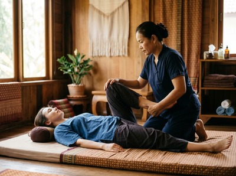

★★★★★ Quality gate failures: paragraphs. Review and edit before removing this notice. ★★★★★
Shawlands sits at the heart of Glasgow's Southside, roughly two miles south of the River Clyde, and it has earned a reputation as one of the city's most distinctive and welcoming neighbourhoods.
Known for its independent cafés, sandstone tenements, and strong community feel, Shawlands attracts professionals, creatives, families, and students. For anyone in Shawlands searching for thai massage in Glasgow, Serendipity Massage Therapy & Wellness is easy to reach from the Southside. Straightforward train and bus connections run directly into the city centre.
Shawlands residents tend to lead full, active lives. Working long hours, raising families, keeping fit, and staying social all take a physical toll. Desk tension, commute fatigue, and the low-grade stress of a busy week build up in the body over time.
Serendipity exists for people in that situation. We offer professional therapeutic massage in a calm, unhurried space — just a short journey from the Southside.

Serendipity is based in Central Chambers on Hope Street, right in the heart of Glasgow's professional district. For Shawlands residents, that means your therapist is easy to reach on a weekday lunch break, after work, or at a weekend. Whether you're carrying tension from a desk job or recovering from time on your feet, book your session today — it's a practical step, not an indulgence.
Serendipity offers a full range of therapeutic and relaxation treatments. All are delivered by trained therapists using techniques developed by head therapist Jariya Malone:
The most direct route from Shawlands is by train. Shawlands railway station is on the Cathcart Circle line. It connects directly to Glasgow Central in around 9 to 10 minutes, with trains running regularly throughout the day. From Glasgow Central, Serendipity on Hope Street is a five-minute walk.
Bus is also a practical option. Services run regularly along Kilmarnock Road and Pollokshaws Road into the city centre, with stops close to the Hope Street area. The journey takes around 20 to 30 minutes depending on traffic. If you prefer to plan ahead, book online now and check live times on the day.
Serendipity Massage Therapy & Wellness is a professional team practice, not a sole trader. Every therapist is trained to the same standard, using techniques developed by head therapist Jariya Malone. Those techniques are drawn from the traditional Thai massage tradition and adapted for reliable results.
That consistency matters. Whether you're visiting for the first time or returning after months away, you'll receive the same quality of care.
Clients come to Serendipity from across Glasgow's Southside for many reasons. Some carry persistent neck and shoulder pain from desk work. Others have back pain that hasn't resolved, or stress that has become physical tension. Many have simply recognised that regular massage is a sound investment in long-term health.
Whatever brings you through the door, the approach is always the same — unhurried, personal, and focused on what your body needs.
Shawlands has been named one of the best places to live in Scotland by The Sunday Times. Time Out Magazine also listed it as one of the world's coolest neighbourhoods, citing its parks, independent dining scene, and community spirit. It sits between Pollok Country Park — home of the Burrell Collection — and the Victorian expanse of Queen's Park. For more on its history and character, visit Shawlands on Wikipedia.
Serendipity is at Central Chambers, 93 Hope Street, Glasgow G2 6LD — around three miles from Shawlands. By train from Shawlands station to Glasgow Central, the journey takes around 9 to 10 minutes. From Glasgow Central, it is a short five-minute walk up Hope Street to the studio.
The train is the fastest and simplest option. Shawlands railway station is on the Cathcart Circle line, with direct services to Glasgow Central taking around 9 to 10 minutes. Bus services also run regularly from Kilmarnock Road and Pollokshaws Road into the city centre. The bus takes around 20 to 30 minutes, and both options leave you a short walk from Hope Street.
Same-day availability depends on the current schedule, so it is always worth checking online. You can view current availability and book your session directly through the website. Booking in advance is recommended if you have a preferred time or therapist in mind, particularly for weekend appointments.
Traditional Thai Massage is a strong choice for desk workers. It uses acupressure and assisted stretching to release tension in the neck, shoulders, and upper back — the areas most affected by prolonged sitting. Thai Oil Massage is a good option if you prefer flowing strokes with targeted pressure on tight areas. A therapist can advise on the best fit during your session.
Serendipity is open seven days a week, with appointments to suit both weekday and weekend schedules. For exact times and current availability, visit the booking page at serendipitymassage.co.uk. You can also call the studio on 0141 673 6630 if you prefer to speak to someone directly.